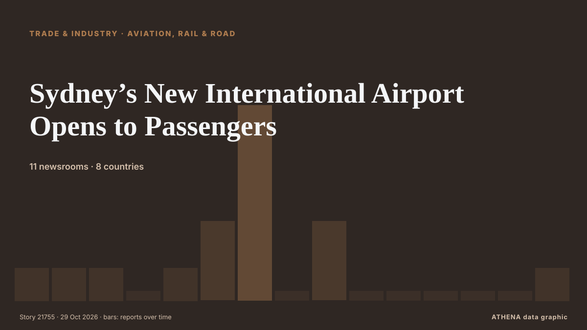

Sydney’s New International Airport Opens to Passengers

Sydney’s second airport is named after the first Australian woman licensed to fly paying passengers. de ABC News Australia
Relayé de façon indépendante par 11 médias dans 8 pays depuis le 22 oct. ; premier à l'annoncer : ABC News Australia ; la couverture faiblit. ATHENA juge le risque faible (1.8/10), surtout en raison de la gravité des dommages décrits et de sa portée géographique et sectorielle. La confiance est de 85 % (élevée) : 11 médias indépendants le confirment, avec une fiabilité moyenne des sources de 71 %.
Pourquoi c'est important: Les perturbations du commerce, de l'industrie ou des infrastructures se propagent le long des chaînes d'approvisionnement et changent coûts et délais au loin.
Ce qui a changé : 1 nouvel article dans les 24 heures jusqu'au 29 oct..
Les titres sont affichés en anglais, tels que publiés.
En un coup d'œil
Sélectionné, noté et rédigé par la méthodologie publiée d'ATHENA. Aucun rédacteur n'intervient sur un événement en particulier. Comment il est produit ›
| 22 Oct 19:02 UTC | 1 |
|---|---|
| 23 Oct 07:02 UTC | 1 |
| 23 Oct 19:02 UTC | 1 |
| 24 Oct 07:02 UTC | 0 |
| 24 Oct 19:02 UTC | 1 |
| 25 Oct 07:02 UTC | 3 |
| 25 Oct 19:02 UTC | 8 |
| 26 Oct 07:02 UTC | 0 |
| 26 Oct 19:02 UTC | 3 |
| 27 Oct 07:02 UTC | 0 |
| 27 Oct 19:02 UTC | 0 |
| 28 Oct 07:02 UTC | 0 |
| 28 Oct 19:02 UTC | 0 |
| 29 Oct 07:02 UTC | 0 |
| 29 Oct 19:02 UTC | 1 |
| 22 Oct 19:56 UTC | 0.0 |
|---|---|
| 26 Oct 06:05 UTC | 1.2 |
| 29 Oct 19:35 UTC | 1.8 |
| 29 Oct 19:35 UTC | 1.8 |
Pourquoi ces chiffres
Importance
Risque
Confiance
La couverture : qui l'a annoncé, et quand
titre tel que publié · ouvre l'original- ABC News Australia · Australie · AustraliaNew Sydney airport honours trailblazing pilot as first passengers welcomed
- Simple Flying · États-Unis · United StatesSydney’s Brand-New 24-Hour Airport Is Set To Reshape How An Entire Region Flies
- ABC News Australia · Australie · AustraliaA flight leaving Sydney tomorrow was 80 years in the making
- ABC News Australia · Australie · AustraliaWestern Sydney International Airport opens to passengers today
- Asharq Al-Awsat (English) · Arabie saoudite · Saudi ArabiaSydney’s New International Airport Opens to Passengers
- Xinhua (English) — page reader · Chine · ChinaWestern Sydney Int'l Airport launches passenger services
- ABC News Australia · Australie · AustraliaNo toll and easy access: What first passengers say of new Sydney airport
- Stuff · Nouvelle-Zélande · New ZealandWatch: Air NZ makes historic first landing at new international airport
- ABC News Australia · Australie · Australia'Meant to be in Perth': Passengers confused by Sydney's new airport
- Xinhua (English) — page reader · Chine · China1st int'l flight lands at new western Sydney airport
- Stuff · Nouvelle-Zélande · New ZealandBe sure to check your ticket before flying into Australia’s newest airport
- RNZ National · Nouvelle-Zélande · New ZealandAir New Zealand becomes first international airline to land in Sydney's new airport
- Greek City Times · Grèce · GreeceGreek Australian Pilot Makes History on First Western Sydney Airport Flight
- ABC News Australia · Australie · AustraliaTravellers warned of upheaval as new Perth Airport terminal plans unveiled
- Bangkok Post — page reader · Thaïlande · Thailand'Full of excitement:' Sydney's new airport opens to passengers
- Stuff · Nouvelle-Zélande · New Zealand‘I’m meant to be in Perth’: Auckland passenger lands on wrong side of Australia
- VnExpress International · Viêt Nam · VietnamSome travelers end up at Australia's newest major airport by mistake
- SBS News · Australie · AustraliaA missing link to Australia's newest airport comes with a $55 sting
- Sydney Morning Herald · Australie · AustraliaTravel delays expected at Sydney airport